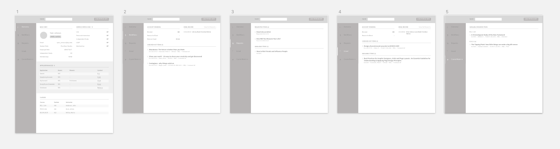
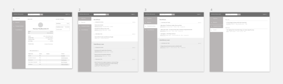

Context
The Access Services department—the department in charge of tracking and fulfilling library item holds—wanted a way to easily see relevant information for a given patron all in one place in order to more quickly debug issues with patron accounts.
Prior to this system being designed, the staff had to log in to multiple different library systems to access each individual peice of information for a patron.
SO YOU’RE AWARE
Any of the 60+ BYU Library web projects—not always UX related—can be added or removed from my project queue at any time based on priority, time contraints, or other reasons.
As project priorities change, a project that only requires 1-8 months of total design and development time often end up spanning up to a year and a half—or more—from start to finish.
1Learn + Understand
When I first was hired at the library I transitioned from a web designer role, to a UX role. This was my first UX project I did as I tried to synthesize and understand what my process was.
I did my best to learn all I could about the requirements of the system by meeting with stakeholders—who were also the users—and getting cyclical feedback from them at the outset of the project—and as the project went along.
ACTIVITIES
- Stakeholder/User interviews
- Task analysis
User Roles
- Access Services Staff
- LIT Employees
Jobs-to-be-Done: Summary
The following are summaries of the requirements for each user group in the form of a job-to-be-done:
FOR ACCESS SERVICES STAFF
When I log into the patron privilege system, I want to be able to access/update all possible information about a patron in one place, so I can help resolve issues with each patron account as quickly and easily as possible so they can access library materials again.
FOR LIT EMPLOYEES
When I log into the patron privilege system, I want to be able to reference student information and generate reports about that student, so I can debug other applications, and use patron information to build other applications.
2Design + Testing
Once I had gathered requirements, I began wireframing, designing, and prototyping the system interface.
ACTIVITIES
- Info. architecture creation
- Wireframe mockup creation
- Visual design mockup creation
- HTML/SCSS mockup creation
DELIVERABLES
- Wireframe mockups
- Visual design mockups
- HTML/SCSS mockups
Workflow Diagramming
OWNING A MISTAKE
Since this was a project where I was beginning to discover and refine my UX process, I didn’t create workflow diagrams for this project. Again, something I now do for every UX-related project.
Wireframing / Prototyping
I initally began iterating design solutions using wireframes. Instead of testing these wireframes using InVision—like I have on every project since—I met with all of the stakeholders as a group to review the wireframes and get feedback.
Once the stakeholders had said that I had designed for each piece of functionality they would need, I moved on to high fidelity mockups.
WIREFRAMES (ITERATION 1)


WIREFRAMES (ITERATION 2)

OWNING A MISTAKE
This is a rookie mistake, but I didn’t perform any usability tests on this project—something I now do at each stage of design for the UX projects I create. However—I did review almost every design iteration—from wireframes, to delivery—with stakeholders.
High Fidelity Mockups / Prototyping
Unfortunately I changed computers around the time that I was transitioning from mokcups to HTML/SCSS and I lost the high fidelity mockups file.
However, the video walkthrough of the live application will show the mockups in their developed state.
HTML + SCSS / Prototyping
At this point I began building what I had designed in HTML and SCSS, and worked with the back-end developer to connect the front-end up to the back-end. (I met regularly with development throughout the project)
View Demo Video
3Ship + Support
I supported developers with any small HTML/SCSS tweaks that needed to be made after launch.
ACTIVITIES
- Design to development hand off
- Design implementation support
- Feedback follow-up
The Outcome
The system was very positively received by access services employees and LIT employees. The tool is used regularly by both groups to accomplish their goals.
Qualitative
QUOTES FROM ACCESS SERVICES STAFF
- “So far I’ve gotten two very positive responses about the page and no complaints. I will let you know if I hear anything else. I assume you are good to proceed with the release. Thank you so much for creating an excellent and very useful product!”
- "The patron page is awesome!!!!”
Lessons Learned
- Usability testing is a primary differentiator between a web design project and a UX project.
- Individual user interviews would have been good to do—though the group interviews seemed to work well for this project.